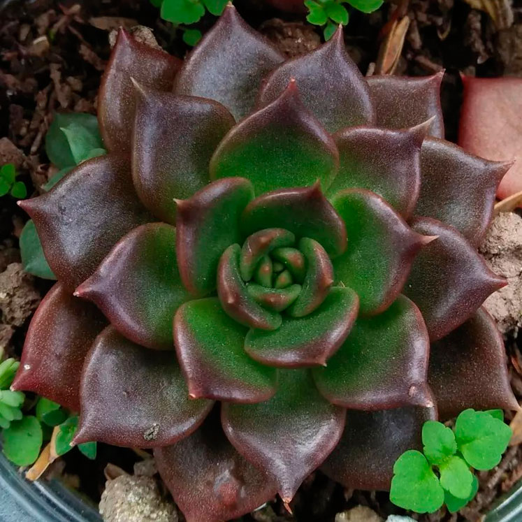
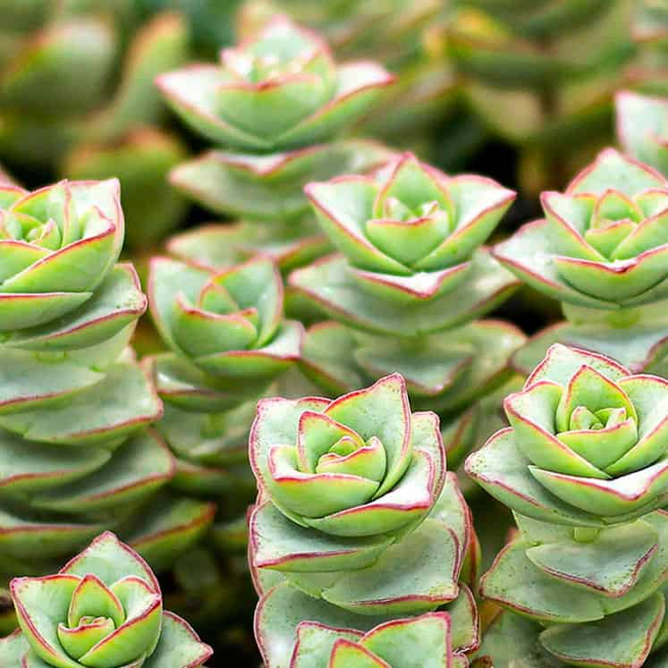
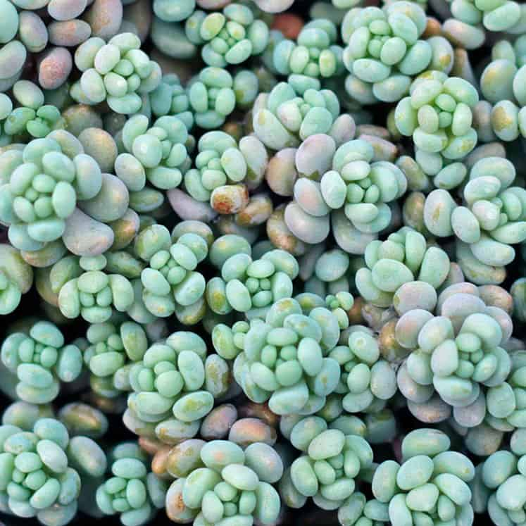
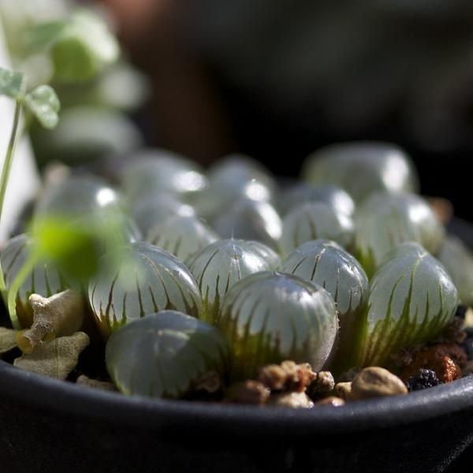
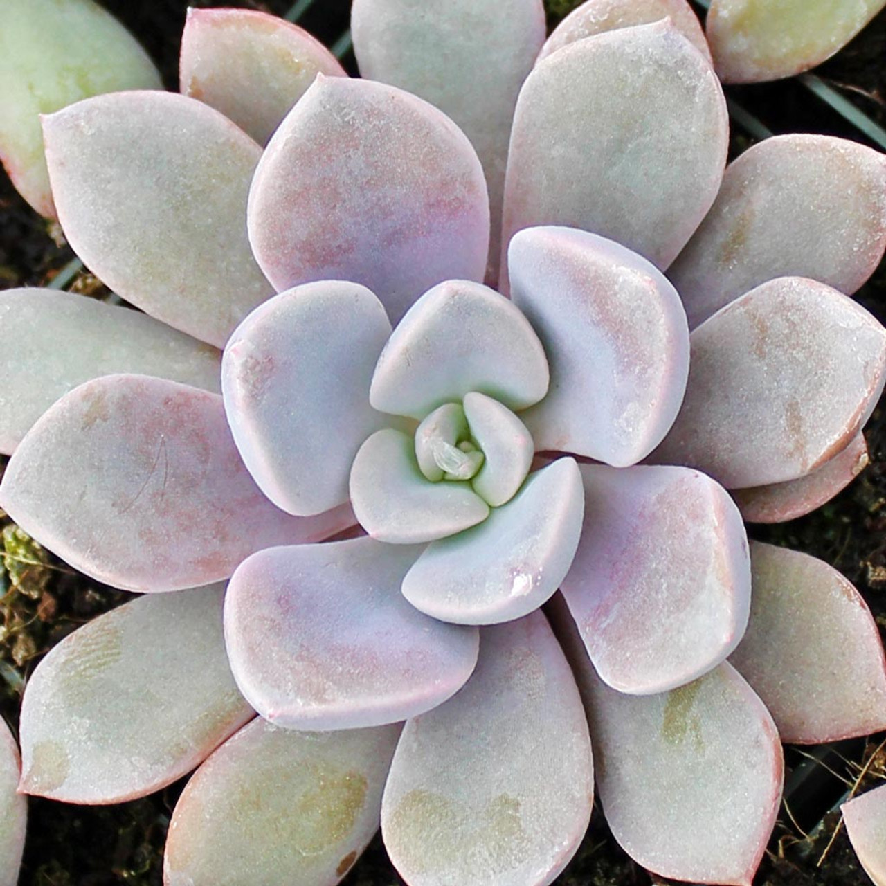
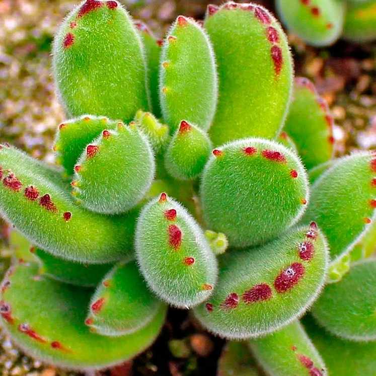
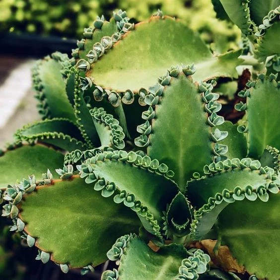

Echeveria

❀La Echeveria es un género de plantas suculentas perteneciente a la familia
Crassulaceae.
❀Estas suculentas son nativas de América Central y América del Sur, y son ampliamente apreciadas por
su atractiva forma de roseta y sus variados colores y texturas.
❀Algunas características comunes de las Echeverias incluyen: Rosetas compactas y hojas carnosas. En
las hojas de las Echeverias se almacena agua y así resiste períodos de sequía.
❀Sus flores son en forma de campana.
❀Existen diferentes variedades de colores y especies como Echeveria elegans, Echeveria 'Lola',
Echeveria
'Perle von Nürnberg' y Echeveria 'Dusty Rose'.
❀Estas suculentas son ampliamente cultivadas tanto en interiores como en exteriores, y son
apreciadas por su belleza y su facilidad de cuidado.
Crassula

❀La Crassula es otro género perteneciente a la familia Crassulaceae.
❀Este género incluye una amplia variedad de especies, muchas de las cuales son apreciadas por su
fácil cuidado y sus formas interesantes.
❀Algunas características comunes de las Crassulas son sus hojas carnosas. Las Crassulas tienen hojas
que les permiten almacenar agua y
sobrevivir en condiciones áridas.
❀El Crecimiento es arbustivo o rastrero, dependiendo de la especie, las
Crassulas pueden crecer como arbustos compactos o como plantas rastreras que se extienden por el
suelo o cuelgan de macetas.
❀Sus flores son pequeñas y coloridas. Muchas especies de Crassula producen pequeñas flores en tonos
de blanco, rosa o rojo.
❀Las Crassulas son generalmente fáciles de cuidar y pueden adaptarse a una variedad de condiciones
de crecimiento.
❀Algunas especies populares de Crassula incluyen Crassula ovata (Jade), Crassula argentea (Árbol del
dinero), Crassula perforata (Collar de corazones) y Crassula tetragona (Miniatura de
pino).
Aeonium

❀El género Aeonium es un grupo perteneciente a la familia Crassulaceae.
❀Estas plantas son nativas de las Islas Canarias, Madeira y partes de África oriental y norte de
África.
❀Presentan una variedad de formas y colores que las hacen populares entre los aficionados a las
suculentas y los jardineros.
❀Algunas características distintivas de los Aeonium son rosetas aplanadas y de estructura
ramificada. Muchas especies de Aeoniums pueden desarrollar tallos ramificados que se extienden desde
el centro
de la roseta y esto les da una apariencia arbustiva y única.
❀El Ciclo de vida a diferencia de muchas otras suculentas, que son perennes, algunas especies
de Aeoniums tienen un ciclo peculiar en el que la planta completa su ciclo de crecimiento,
florece y muere. Sin embargo, antes de morir, suelen producir numerosos esquejes que pueden enraizar
y
continuar el ciclo de vida de la planta.
❀Algunas especies populares de Aeonium incluyen Aeonium arboreum (Zwartkop), Aeonium 'Kiwi', Aeonium
haworthii (Pinwheel), y Aeonium tabuliforme (Flat Aeonium).
Sedum

❀El género Sedum son suculentas nativas de muchas regiones del mundo,
incluyendo Europa, Asia, América del Norte y América del Sur.
❀Son ampliamente apreciadas por su fácil cuidado, su resistencia y su
capacidad para agregar interés visual a jardines y arreglos de contenedores.
❀Algunas características distintivas de los Sedum son sus hojas y tallos carnosos. Muchas
especies de Sedum tienen tallos gruesos y carnosos que almacenan agua y nutrientes. Estos tallos
pueden ser erectos, rastreros o colgantes, según la especie.
❀Sus flores son muy vistosas. En la temporada de floración, los Sedum producen racimos de flores en
forma de
estrella o de panícula en la parte superior de los tallos.
❀Algunas especies populares de Sedum incluyen Sedum rubrotinctum (Burro's Tail), Sedum adolphii
(Golden Sedum), Sedum morganianum (Burro's Tail), y
Sedum spurium (Stonecrop).
❀Estas suculentas son apreciadas por su belleza, su facilidad de cuidado y su
capacidad para atraer a polinizadores como mariposas y abejas.
Haworthia

❀El género Haworthia son suculentas originarias del sur de África y son
apreciadas por su atractiva apariencia y su facilidad de cuidado.
❀Algunas características distintivas de las Haworthias son sus rosetas compactas. Las Haworthias
crecen en rosetas compactas compuestas por hojas carnosas y
gruesas. Estas hojas suelen tener una disposición ordenada y a menudo están dispuestas en forma de
espiral. Las hojas pueden variar en color y textura, con patrones que
van desde rayas y manchas hasta superficies rugosas o transparentes. Estos patrones y texturas
únicas
les dan a las Haworthias un atractivo visual distintivo.
❀Sus flores son delicadas. Algunas especies de Haworthias producen tallos delgados que sostienen
racimos de flores blancas o rosadas en forma de estrella.
❀Algunas especies populares de Haworthia incluyen Haworthia attenuata (Zebra Plant), Haworthia cooperi
(Cooper's
Haworthia), Haworthia fasciata (Zebra Plant), y Haworthia retusa (Star Cactus).
Graptoveria

❀La Graptoveria es un híbrido intergenérico entre las plantas suculentas
Graptopetalum y Echeveria,
pertenecientes a la familia Crassulaceae. Estos híbridos han sido creados para combinar las
características deseables de ambas especies parentales, como la forma de la roseta, el color y la
resistencia.
❀Algunas características distintivas de las Graptoverias son sus rosetas compactas.
❀Las Graptoverias pueden presentar una amplia gama de colores, que van desde los
tonos verdes, azules y grises hasta los rosas, morados y naranjas. Algunas variedades también tienen
hojas con bordes o puntas de color más intenso.
❀Las hojas de las Graptoverias son
gruesas, carnosas y carnudas, lo que les permite almacenar agua y resistir períodos de sequía.
❀Muchas especies de Graptoverias tienen un crecimiento compacto y bajo, lo que
las
hace ideales para su cultivo en macetas, jardines de rocas o arreglos de contenedores.
❀Algunas
variedades populares de Graptoveria incluyen Graptoveria 'Fred Ives', Graptoveria 'Debbie',
Graptoveria
'Opalina', y Graptoveria 'Titubans'.
Cotyledon

❀El Cotyledon es un género de plantas suculentas perteneciente a la familia Crassulaceae. Este género
incluye una variedad de especies que son apreciadas por su atractiva apariencia y su facilidad de
cuidado.
❀Algunas características distintivas de los Cotyledon son sus
rosetas o tallos suculentos. Los Cotyledon pueden crecer en forma de rosetas compactas de hojas
suculentas o en forma de tallos erguidos o rastreros, dependiendo de la especie.
❀Sus flores son muy vistosas. Algunas especies de Cotyledon producen racimos de flores en forma de campana en la parte
superior de los tallos. Estas flores pueden ser de colores que van desde el blanco y el amarillo
hasta
el naranja y el rojo, dependiendo de la especie.
❀Algunas especies populares de Cotyledon incluyen
Cotyledon orbiculata (Planta del dedo de la bruja), Cotyledon tomentosa (Cabeza de gato) y Cotyledon
ladismithiensis (Cotyledon de Ladismith).
Kalanchoe

❀Los Kalanchoes son suculentas originarias de África, Madagascar y otras regiones tropicales y
subtropicales, y son ampliamente cultivadas por su atractiva apariencia y su facilidad de cuidado.
❀Sus flores son muy coloridas. En la temporada de floración, los Kalanchoes producen racimos de
flores vistosas en una amplia gama de colores, que van desde el blanco y el rosa hasta el rojo, el
naranja y el amarillo.
❀Los Kalanchoes pueden crecer en forma de arbusto
compacto,
con tallos cortos y ramificados, o en forma de roseta, con hojas dispuestas en una espiral alrededor
del
centro. Algunas especies también pueden crecer como plantas colgantes o rastreras.
❀Muchas especies de Kalanchoe son fáciles de propagar a partir de esquejes de hojas, tallos o de los hijuelos que crecen en sus hojas.
❀Algunas
especies populares de Kalanchoe incluyen Kalanchoe blossfeldiana (Flor de la fortuna), Kalanchoe
tomentosa (Oreja de gato), Kalanchoe pinnata (Hoja de la vida) y Kalanchoe thyrsiflora (Flor de
coral).